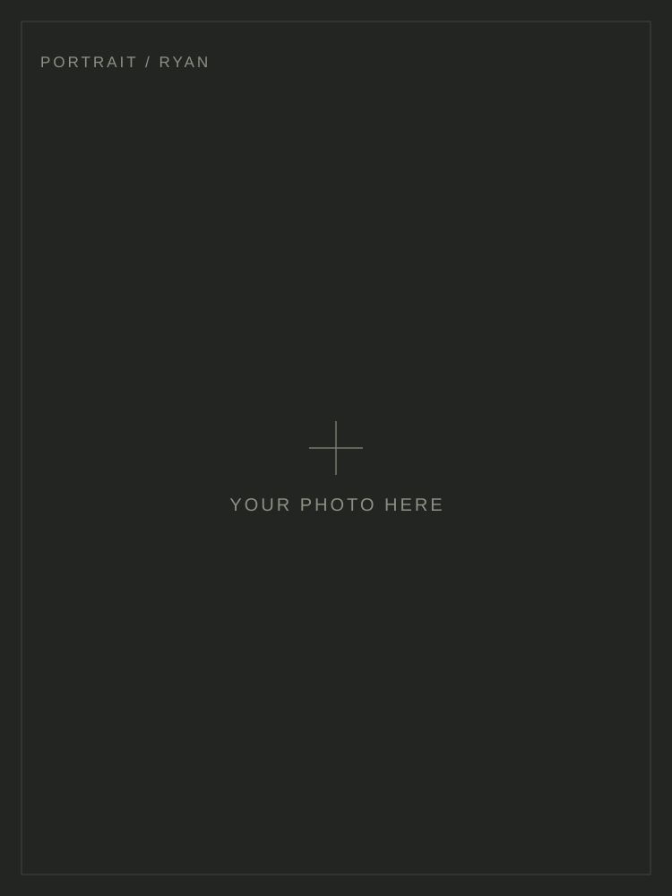

AI Products · Vibe CodingRyan · 焦博文

我关心 AI 能做什么，也关心人们为什么需要它。
把正在思考的问题，写成可以讨论的文字。
经历不只是一段履历，也是看待问题的方式。
长一点的思考，和日常的小发现。
关于 AI 产品、实践与思考。
用微信扫一扫，或搜索「碳基推理中」。
想法、学习，以及生活里的观察。
Enable JavaScript for animated navigation and article listings.